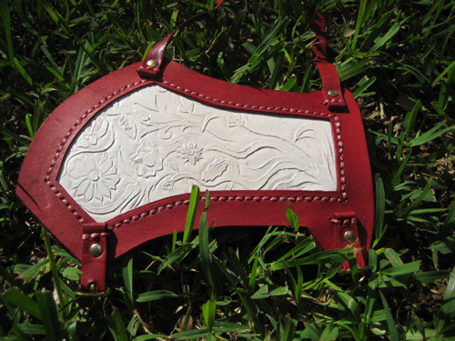

Ember Costumes
Tutorials and Resources
Susan's Archery Bracer (Prince Caspian Movie)
Background Information
In the process of making Susan's complicated battle outfit, while I waited for John to finish the chain mail and other props, I decided to make Susan's Night Raid outfit from the Prince Caspian Movie.Pictures

Other Night Raid Props
Underdress
 Leather Armor Cuirass
Leather Armor Cuirass
 Red Bag
Red Bag
 Archery Bracer
Archery Bracer
Back to Susan's Night Raid Outfit
Back to Costume Gallery